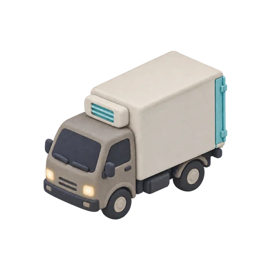

문 너머가 벌써 조금 밝아요.
사장님은
아침에 문만 여세요.
동네가 자는 동안 CHADA 냉장차가 식자재를 문 앞까지, 2.8℃ 그대로 가져다 둬요.
사장님의 아침,
왜 이렇게 바쁠까요?
거래처는 다섯 곳, 배송 시간은 제각각. 오픈 준비보다 연락 확인이 먼저인 아침이에요.
- 채소 거래처사장님, 오늘 배송은 11시쯤 될 것 같아요.
- 정육 거래처최소 주문량 맞춰 주셔야 출고돼요.
- 수산 거래처문 앞에 두고 갑니다.
- 고기 상자가 한 시간째 밖에 있었네… 내일은 그냥 새벽 시장 가야겠다.
다섯 대가 오던 길,
이제 한 대가 돕니다.
동네 식당들의 식자재를 냉장차 한 대가 새벽에 모아서 돌아요. 사장님은 주문만 하시면 돼요.

- 5분
한 번에 주문
거래처 여러 곳을 앱 한 화면에서 주문해요. 마감은 전날 밤 11시.
- 05:40
새벽 입고
동네 단위로 묶은 동선으로, 오픈 전에 매장 냉장고 안까지 넣어 둬요.
- 2.8℃
끊기지 않는 냉장
적재부터 입고까지 온도를 기록하고, 사장님 폰으로 그대로 보내 드려요.
동네가 자는 동안,
냉장고가 채워져요.
CHADA 냉장차 한 대가 새벽 3시 30분에 출발해, 해 뜨기 전까지 동네 식당 여덟 곳을 차례로 돕니다.
끝까지 2.8℃,
기록으로 보여드릴게요.
냉장차에 싣는 순간부터 사장님 냉장고에 넣는 순간까지, 온도는 5분마다 기록돼요. 기준 범위를 벗어나면 그 상자는 입고하지 않아요.
이미 이 동네 식당 120곳의
아침이 바뀌었어요.
마포·성수 권역에서 1년 동안 쌓은 숫자예요.
- 0함께하는 동네 식당
- 05:40평균 입고 완료 시각
- 0오픈 전 입고율
- 0평균 입고 온도
"아침 주문 전화가 없어진 게 제일 커요. 그 시간에 육수를 하나 더 끓입니다."
망원동 칼국숫집 사장님
"여름에 고기 상자 걱정을 안 하게 됐어요. 온도 기록이 폰으로 오니까 마음이 편해요."
성수동 국밥집 사장님
시작은 2주 시범 배송부터.
지금 쓰시는 거래처를 그대로 연결해요. 맞지 않으면 시범 배송에서 멈추셔도 돼요.
- 01
상담
가게 위치와 지금 거래처를 알려 주세요.
1일 - 02
거래처 연결
쓰시던 거래처를 CHADA 주문 화면에 연결해요.
3~5일 - 03
동선 설계
가게 위치에 맞춰 새벽 동선과 입고 방식을 정해요.
3일 - 04
2주 시범 배송
실제 새벽 입고를 2주 동안 먼저 경험해 보세요.
2주 - 05
정식 시작
시범 기간 기록을 같이 보고 이어갈지 정해요.
-
자주 묻는 질문
새벽에 가게 문은 어떻게 열고 들어오나요?
스마트락 출입 권한을 입고 시간대에만 위임받아요. 출입 기록은 사장님 폰에 그대로 남아요.
지금 쓰는 거래처를 바꿔야 하나요?
아니요. 쓰시던 거래처를 그대로 연결하는 게 기본이에요. 원하시면 동네에서 많이 쓰는 거래처를 추천해 드려요.
주문 마감 시간을 놓치면요?
마감은 전날 밤 11시예요. 놓친 품목은 다음 날 새벽 배송으로 넘어가고, 알림으로 먼저 알려 드려요.
상자에 문제가 있으면 어떻게 하나요?
입고 사진과 온도 기록이 함께 남아서, 앱에서 바로 확인하고 접수할 수 있어요.
우리 동네도 되나요?
새 권역의 첫 파트너 식당을 모집하고 있어요. 상담 때 가게 위치를 알려 주시면 동선을 먼저 확인해 드려요.
내일 아침,
문만 열어 보세요.
남겨 주시면 영업일 기준 하루 안에 담당자가 연락드릴게요. 오늘 밤 주문하면, 내일 아침 그 문 앞에 있을 거예요.